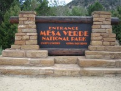
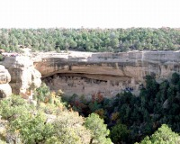
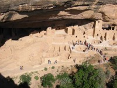
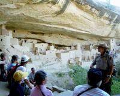
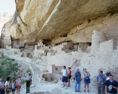

 |
Cortezの街よりわずか20分で到着。 |
|
グランドキャニオンのような崖をくりぬいて街が作られています。 |
 |
 |
Cliff Palaceを上より見下ろす。 |
| レインジャー同伴でないと中に入れません。ツアーの金額は$2くらいでした。 |  |
 |
パレス内を皆で見学しています。 |
アメリカの国定公園の中では珍しく、人間の香りがします。数あるアメリカ先住民の遺跡ですが、唯一ここは面白かったです。お勧めです。
ガイドツアーに申し込まないと下には降りれません。申込みはビジターセンターなので必ず最初に寄りましょう。ツアーは結構混んでいます。私の場合は、夕方ビジターセンターが閉まるギリギリ到着で、その日のツアーチケットはSold Outでした。次の日であれば好きな時間を選ぶことができました。はっきり言って、このツアーに申し込まない限り、遠くで眺めるだけになってしまいます。
Cortezの街に近いのでNP内のロッジに泊まる必要はありませんが、どうしても泊まりたい場合は1泊にすることをお勧めします。ロッジは夕方には満室になりますが、午前中であれば当日宿泊OKのようでした。
公園は非常に広く、スピードも皆さん遅いので、公園入り口よりPalaceが在るところまでは３０～６０分かかることを計算に入れておく必要があります。気候は多少暑いくらいで、水を多量に持ち込む必要はありませんでした。
Written : 2004.04.04